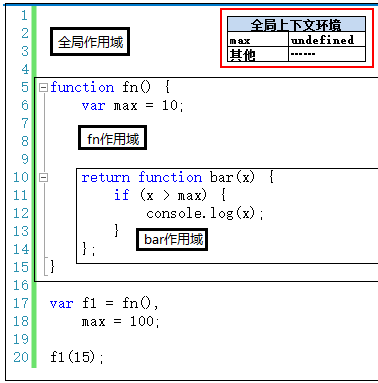

<!DOCTYPE html>
<html>
<head><meta name="generator" content="Hexo 3.8.0">
  <meta charset="utf-8">
  

  
  <title>闭包 | Gzqqqqq</title>
  <meta name="viewport" content="width=device-width, initial-scale=1, maximum-scale=1">
  
  
  
  <meta name="description" content="闭包应用的两种情况： 函数作为返回值 函数作为参数传递  第一，函数作为返回值12345678910111213function fn()&amp;#123;    var max = 10;        return function bar(x)&amp;#123;        if(x &amp;gt; max)&amp;#123;  //跨作用域取值，bar在fn中创建，所以可以在fn作用域中的取值。">
<meta name="keywords" content="javascript">
<meta property="og:type" content="article">
<meta property="og:title" content="闭包">
<meta property="og:url" content="http://Gzqqqqq.github.io/public/2019/03/31/闭包/index.html">
<meta property="og:site_name" content="Gzqqqqq">
<meta property="og:description" content="闭包应用的两种情况： 函数作为返回值 函数作为参数传递  第一，函数作为返回值12345678910111213function fn()&amp;#123;    var max = 10;        return function bar(x)&amp;#123;        if(x &amp;gt; max)&amp;#123;  //跨作用域取值，bar在fn中创建，所以可以在fn作用域中的取值。">
<meta property="og:locale" content="default">
<meta property="og:image" content="http://gzqqqqq.github.io/public/2019/03/31/闭包/闭包1.png">
<meta property="og:image" content="http://gzqqqqq.github.io/public/2019/03/31/闭包/闭包2.png">
<meta property="og:image" content="http://gzqqqqq.github.io/public/2019/03/31/闭包/闭包3.png">
<meta property="og:image" content="http://gzqqqqq.github.io/public/2019/03/31/闭包/闭包4.png">
<meta property="og:image" content="http://gzqqqqq.github.io/public/2019/03/31/闭包/闭包5.png">
<meta property="og:updated_time" content="2019-03-31T10:42:05.874Z">
<meta name="twitter:card" content="summary">
<meta name="twitter:title" content="闭包">
<meta name="twitter:description" content="闭包应用的两种情况： 函数作为返回值 函数作为参数传递  第一，函数作为返回值12345678910111213function fn()&amp;#123;    var max = 10;        return function bar(x)&amp;#123;        if(x &amp;gt; max)&amp;#123;  //跨作用域取值，bar在fn中创建，所以可以在fn作用域中的取值。">
<meta name="twitter:image" content="http://gzqqqqq.github.io/public/2019/03/31/闭包/闭包1.png">
  
    <link rel="alternate" href="/atom.xml" title="Gzqqqqq" type="application/atom+xml">
  
  
    <link rel="icon" href="/images/default-avatar.jpeg">
  
  
    <link href="//fonts.googleapis.com/css?family=Source+Code+Pro" rel="stylesheet" type="text/css">
  
  <link rel="stylesheet" href="/css/style.css">
  <link rel="stylesheet" href="/css/highlight.css">
</head>
</html>
<body>
  <div id="fullpage" class="mobile-nav-right">
    
      <div id="wrapper" title="图片来自网络">
    
    
      <header id="header">
  <div id="nav-toggle" class="nav-toggle"></div>
  <div class="head-box global-width">
    <nav class="nav-box nav-right">
      
        <a class="nav-item" href="/" title>首页</a>
      
        <a class="nav-item" href="/archives" title>归档</a>
      
    </nav>
  </div>
</header>
      <div id="middlecontent" title class="global-width sidebar-right">
        <section id="main"><article id="post-闭包" class="article global-container article-type-post" itemscope itemprop="blogPost">
  
    <header class="article-header">
      
  
    <h1 class="article-title" itemprop="name">
      闭包
    </h1>
  

    </header>
  
  <div class="article-meta">
    <a href="/2019/03/31/闭包/" class="article-date">
  <time datetime="2019-03-31T08:52:56.000Z" itemprop="datePublished">2019-03-31</time>
</a>
    
    
  <ul class="article-tag-list"><li class="article-tag-list-item"><a class="article-tag-list-link" href="/tags/javascript/">javascript</a></li></ul>

  </div>
  
    <span id="busuanzi_container_page_pv">
      本文总阅读量<span id="busuanzi_value_page_pv"></span>次
    </span>
  

  <div class="article-inner">
    
    <div class="article-content article-content-doorframe" itemprop="articleBody">
      
       
  	
  	  <h4 id="闭包应用的两种情况："><a href="#闭包应用的两种情况：" class="headerlink" title="闭包应用的两种情况："></a>闭包应用的两种情况：</h4><ul>
<li>函数作为返回值</li>
<li>函数作为参数传递</li>
</ul>
<h4 id="第一，函数作为返回值"><a href="#第一，函数作为返回值" class="headerlink" title="第一，函数作为返回值"></a>第一，函数作为返回值</h4><div class="highlight-box" autocomplete="off" autocorrect="off" autocapitalize="off" spellcheck="false" contenteditable="true" data-rel="BASH"><figure class="iseeu highlight /bash"><table><tr><td class="gutter"><pre><span class="line">1</span><br><span class="line">2</span><br><span class="line">3</span><br><span class="line">4</span><br><span class="line">5</span><br><span class="line">6</span><br><span class="line">7</span><br><span class="line">8</span><br><span class="line">9</span><br><span class="line">10</span><br><span class="line">11</span><br><span class="line">12</span><br><span class="line">13</span><br></pre></td><td class="code"><pre><span class="line"><span class="keyword">function</span> <span class="function"><span class="title">fn</span></span>()&#123;</span><br><span class="line">    var max = 10;</span><br><span class="line">    </span><br><span class="line">    <span class="built_in">return</span> <span class="keyword">function</span> bar(x)&#123;</span><br><span class="line">        <span class="keyword">if</span>(x &gt; max)&#123;  //跨作用域取值，bar在fn中创建，所以可以在fn作用域中的取值。</span><br><span class="line">            console.log(x);</span><br><span class="line">        &#125;</span><br><span class="line">    &#125;;</span><br><span class="line">&#125;</span><br><span class="line"></span><br><span class="line">var f1 = fn(),</span><br><span class="line">    max = 100;</span><br><span class="line">f1(15);</span><br></pre></td></tr></table></figure></div>
<p>如上代码，bar函数作为返回值，赋值给f1变量。执行f1(15)时，用到了fn作用域下的max变量的值。</p>
<h4 id="第二，函数作为参数被传递"><a href="#第二，函数作为参数被传递" class="headerlink" title="第二，函数作为参数被传递"></a>第二，函数作为参数被传递</h4><div class="highlight-box" autocomplete="off" autocorrect="off" autocapitalize="off" spellcheck="false" contenteditable="true" data-rel="BASH"><figure class="iseeu highlight /bash"><table><tr><td class="gutter"><pre><span class="line">1</span><br><span class="line">2</span><br><span class="line">3</span><br><span class="line">4</span><br><span class="line">5</span><br><span class="line">6</span><br><span class="line">7</span><br><span class="line">8</span><br><span class="line">9</span><br><span class="line">10</span><br><span class="line">11</span><br><span class="line">12</span><br><span class="line">13</span><br></pre></td><td class="code"><pre><span class="line">var max = 10,</span><br><span class="line">    fn = <span class="keyword">function</span>(x)&#123;</span><br><span class="line">            <span class="keyword">if</span>(x &gt; max)&#123;           //max=10,而不等于100</span><br><span class="line">                console.log(x);    //15</span><br><span class="line">            &#125;</span><br><span class="line">        &#125;;</span><br><span class="line">        </span><br><span class="line">(<span class="keyword">function</span>(f)&#123;</span><br><span class="line"></span><br><span class="line">    var max = 100;</span><br><span class="line">    f(15);</span><br><span class="line">    </span><br><span class="line">&#125;)(fn);</span><br></pre></td></tr></table></figure></div>
<p>如上代码中，fn函数作为一个参数被传递进入另一个函数，赋值给f参数。执行f(15)时，max变量的取值是10，而不是100。</p>
<p>当一个函数被调用完成之后，其执行上下文环境将被销毁，其中的变量也会被同时销毁。</p>
<p>有些情况下，函数调用完成之后，其<strong>执行上下文环境不会接着被销毁</strong>。这就是需要<strong>理解闭包的核心内容</strong>。</p>
<p>咱们可以拿本文的第一段代码（稍作修改）来分析一下。</p>
<p></p>
<p><strong>第一步</strong>，代码执行前生成全局上下文环境，并在执行时对其中的变量进行赋值。此时全局上下文环境是活动状态。</p>
<p></p>
<p><strong>第二步</strong>，执行第17行代码时，调用fn()，产生fn()执行上下文环境，压栈，并设置为活动状态。</p>
<p></p>
<p><strong>第三步</strong>，执行完第17行，fn()调用完成。按理说应该销毁掉fn()的执行上下文环境，但是这里不能这么做。</p>
<p><strong>注意</strong>：因为执行fn()时，返回的是一个函数。函数的特别之处在于<strong>可以创建一个独立的作用域</strong>。</p>
<p>而正巧合的是，返回的这个函数体(bar)中，还有一个<strong>自由变量max要引用fn作用域下的fn()上下文环境中的max</strong>。</p>
<p>因此，这个max不能被销毁，销毁了之后bar函数中的max就找不到值了。</p>
<p>因此，这里的<strong>fn()上下文环境不能被销毁，还依然存在与执行上下文栈中</strong>。</p>
<p>即，执行到第18行时，全局上下文环境将变为活动状态，但是fn()上下文环境依然会在执行上下文栈中。</p>
<p>另外，执行完第18行，全局上下文环境中的max被赋值为100。</p>
<p>如下图：</p>
<p></p>
<p><strong>第四步</strong>，执行到第20行，执行f1(15)，即执行bar(15)，创建bar(15)上下文环境，并将其设置为活动状态。</p>
<p></p>
<p>执行bar(15)时，max是自由变量，需要向创建bar函数的作用域中查找，找到了max的值为10。这个过程在作用域链一节已经讲过。</p>
<p>这里的重点就在于，创建bar函数是在执行fn()时创建的。</p>
<p>fn()早就执行结束了，但是fn()执行上下文环境还存在与栈中，因此bar(15)时，max可以查找到。</p>
<p>如果fn()上下文环境销毁了，那么max就找不到了。</p>
<p><strong>使用闭包会增加内存开销</strong>，现在很明显了吧！</p>
<p>第五步，执行完20行就是上下文环境的销毁过程，这里就不再赘述了。</p>

  	
  
</div>
    
      <footer class="article-footer">
        完
      </footer>
    
  </div>
  
    
<nav id="article-nav">
  <div class="article-nav-block">
    
  </div>
  <div class="article-nav-block">
    
      <a href="/2019/03/31/作用域/" id="article-nav-older" class="article-nav-link-wrap">
        <div class="article-nav-title">作用域</div>
        <strong class="article-nav-caption"></strong>
      </a>
    
  </div>
</nav>

    
<div id="gitmentContainer"></div>
<link rel="stylesheet" href="https://imsun.github.io/gitment/style/default.css">
<script src="https://imsun.github.io/gitment/dist/gitment.browser.js"></script>
<script>
var gitment = new Gitment({
  owner: '',
  repo: '',
  oauth: {
    client_id: '',
    client_secret: '',
  },
})
gitment.render('gitmentContainer')
</script>

  
  
</article>
</section>
        <aside id="sidebar">
  
    <div class="widget-box">
  <div class="avatar-box">
    
    <h3 class="avatar-name">
      
        椿去湫来
      
    </h3>
    <p class="avatar-slogan">
      如果有来生，我要做一棵树，站成永恒，没有悲欢的姿势。
    </p>
  </div>
</div>


  
    

  
    
  <div class="widget-box">
    <h3 class="widget-title">Tags</h3>
    <div class="widget">
      <ul class="tag-list"><li class="tag-list-item"><a class="tag-list-link" href="/tags/DOM/">DOM</a></li><li class="tag-list-item"><a class="tag-list-link" href="/tags/css/">css</a></li><li class="tag-list-item"><a class="tag-list-link" href="/tags/git/">git</a></li><li class="tag-list-item"><a class="tag-list-link" href="/tags/javascript/">javascript</a></li><li class="tag-list-item"><a class="tag-list-link" href="/tags/node/">node</a></li><li class="tag-list-item"><a class="tag-list-link" href="/tags/vue/">vue</a></li><li class="tag-list-item"><a class="tag-list-link" href="/tags/样例/">样例</a></li><li class="tag-list-item"><a class="tag-list-link" href="/tags/正则表达式/">正则表达式</a></li><li class="tag-list-item"><a class="tag-list-link" href="/tags/私人/">私人</a></li></ul>
    </div>
  </div>


  
    
  <div class="widget-box">
    <h3 class="widget-title">Tag Cloud</h3>
    <div class="widget tagcloud">
      <a href="/tags/DOM/" style="font-size: 10px;">DOM</a> <a href="/tags/css/" style="font-size: 15px;">css</a> <a href="/tags/git/" style="font-size: 10px;">git</a> <a href="/tags/javascript/" style="font-size: 20px;">javascript</a> <a href="/tags/node/" style="font-size: 10px;">node</a> <a href="/tags/vue/" style="font-size: 10px;">vue</a> <a href="/tags/样例/" style="font-size: 10px;">样例</a> <a href="/tags/正则表达式/" style="font-size: 10px;">正则表达式</a> <a href="/tags/私人/" style="font-size: 10px;">私人</a>
    </div>
  </div>

  
    
  <div class="widget-box">
    <h3 class="widget-title">Archives</h3>
    <div class="widget">
      <ul class="archive-list"><li class="archive-list-item"><a class="archive-list-link" href="/archives/2019/03/">March 2019</a></li></ul>
    </div>
  </div>

  
    
  <div class="widget-box">
    <h3 class="widget-title">Recent Posts</h3>
    <div class="widget">
      <ul>
        
          <li>
            <a href="/2019/03/31/闭包/">闭包</a>
          </li>
        
          <li>
            <a href="/2019/03/31/作用域/">作用域</a>
          </li>
        
          <li>
            <a href="/2019/03/31/this/">this</a>
          </li>
        
          <li>
            <a href="/2019/03/31/执行上下文/">执行上下文</a>
          </li>
        
          <li>
            <a href="/2019/03/30/从原型到原型链再到继承/">从原型到原型链再到继承</a>
          </li>
        
      </ul>
    </div>
  </div>

  
</aside>
      </div>
      <footer id="footer">
  <div class="foot-box global-width">
    &copy; 2019 Gzqqqqq &nbsp;&nbsp;
    Powered by <a href="http://hexo.io/" target="_blank">Hexo</a>
    &nbsp;|&nbsp;主题 <a href="https://github.com/yiluyanxia/hexo-theme-antiquity">antiquity</a>
    <br>
    <script async src="//busuanzi.ibruce.info/busuanzi/2.3/busuanzi.pure.mini.js"></script>
    <span id="busuanzi_container_site_pv">阁下是第<span id="busuanzi_value_site_pv"></span>个访客</span>
  </div>
</footer>
      <script src="//ajax.googleapis.com/ajax/libs/jquery/2.0.3/jquery.min.js"></script>

<script src="/js/jquery-2.0.3.min.js"></script>

  <link rel="stylesheet" href="/fancybox/jquery.fancybox.css">
  <script src="/fancybox/jquery.fancybox.pack.js"></script>


<script src="/js/script.js"></script>


    </div>
    <nav id="mobile-nav" class="mobile-nav-box">
  <div class="mobile-nav-img mobile-nav-top"></div>
  
    <a href="/" class="mobile-nav-link">首页</a>
  
    <a href="/archives" class="mobile-nav-link">归档</a>
  
  <div class="mobile-nav-img  mobile-nav-bottom"></div>
</nav>    
  </div>
</body>
</html>